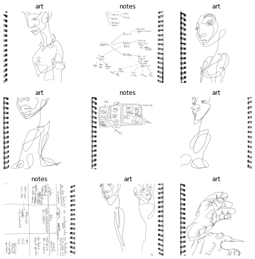
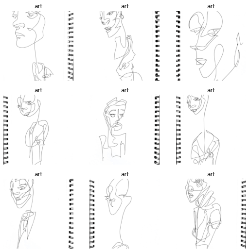
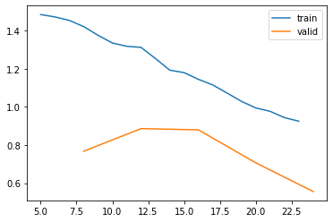

data_home = singleline_data_home(default="../data_home")
sample_path = data_home / "raster/epoch-20231214/"embeddings
Fill in a module description here
Dataset
Loading a dataset of raster images from a directory containing sketchbook folders.
sketchbook_dataloaders
sketchbook_dataloaders (sketchbooks_dir, **kwargs)
dls = sketchbook_dataloaders(sample_path)
test_eq(["art", "cover", "notes"], dls.vocab)dls.items[0]Path('../data/sample/sb46/art/077-light.jpg')dls.train.show_batch(max_n=9, ncols=3)
dls.valid.show_batch(max_n=9, ncols=3)
Learner
sketchbook_resnet34
sketchbook_resnet34 (sketchbooks_dir, load_checkpoint=None)
# learn = sketchbook_resnet34(SAMPLE_SKETCHBOOKS_DIR)
# learn.fine_tune(6)# learn.recorder.plot_loss()
# learn.save("SAMPLE_CHECKPOINT")Path('../data/sample/models/sample_epoch6.pth')Load Trained Model
learn = sketchbook_resnet34(SAMPLE_SKETCHBOOKS_DIR, SAMPLE_CHECKPOINT)
learn.model[-1]loading sample_epoch6Sequential(
(0): AdaptiveConcatPool2d(
(ap): AdaptiveAvgPool2d(output_size=1)
(mp): AdaptiveMaxPool2d(output_size=1)
)
(1): fastai.layers.Flatten(full=False)
(2): BatchNorm1d(1024, eps=1e-05, momentum=0.1, affine=True, track_running_stats=True)
(3): Dropout(p=0.25, inplace=False)
(4): Linear(in_features=1024, out_features=512, bias=False)
(5): ReLU(inplace=True)
(6): BatchNorm1d(512, eps=1e-05, momentum=0.1, affine=True, track_running_stats=True)
(7): Dropout(p=0.5, inplace=False)
(8): Linear(in_features=512, out_features=3, bias=False)
)sample_item = learn.dls.train.items[0]
learn.predict(sample_item)('art', tensor(0), tensor([0.6050, 0.0191, 0.3759]))show_image(Image.open(sample_item))<Axes: >Embeddings
batch_fnames_and_images
batch_fnames_and_images (sketchbooks_dir)
Prepare data to compute embeddings over all images and store them along with a reference to the underlying filename.
batched_fnames, ordered_dls = batch_fnames_and_images(SAMPLE_SKETCHBOOKS_DIR)
# ensure all items are in train, none in valid
test_eq(0, len(ordered_dls.valid.items))
test_eq(len(ordered_dls.items), len(ordered_dls.train.items))
# ensure there are the same number of batches
test_eq(num_batches, len(ordered_dls.train))
test_eq(len(batched_fnames), len(ordered_dls.train))
test_eq(DEFAULT_BATCH_SIZE, len(batched_fnames[0]))total items: 366, num batches: 6Hook
Hook (m)
Initialize self. See help(type(self)) for accurate signature.
predict_embeddings
predict_embeddings (model, xb)
train_iter = iter(ordered_dls.train)
x0, y0 = next(train_iter)
print(x0.shape, y0.shape)
activations = predict_embeddings(learn.model, x0)
activations.shapetorch.Size([64, 3, 224, 224]) torch.Size([64])(64, 512)embed_dir
embed_dir (input_dir, learner)
rows = []
for x in embed_dir(SAMPLE_SKETCHBOOKS_DIR, learn):
rows.append(x)
df = pd.DataFrame(rows)total items: 366, num batches: 6df.head()| idx | fname | label | pred_label | pred_idx | pred_probs | emb_csv | |
|---|---|---|---|---|---|---|---|
| 0 | 0 | ../data/sample/sb45/art/081.jpg | art | cover | 1 | 0.253424,0.746451,0.000124 | 0.95856005,-0.6066226,-0.5562198,-0.5784502,-0.1323025,-0.56148213,0.57790154,-0.60706127,0.64815235,-0.594397,-0.61358374,-0.65156144,0.30152777,-0.6236165,-0.569284,-0.6773242,-0.63575596,1.4439385,0.13333796,-0.62515604,1.9490546,-0.6630973,1.2556934,-0.5628529,0.31702843,-0.6304264,-0.5685409,-0.62586486,-0.26964393,3.2932184,0.23661374,-0.678382,1.0161973,1.2014067,1.6051579,0.7936368,-0.48034564,-0.664829,-0.62973106,-0.57502395,-0.45905814,-0.60106474,-0.5888426,-0.61431277,2.159984,-0.6346218,1.1672144,0.8680809,-0.5397529,0.08189649,-0.65473264,1.4259063,0.72108144,0.6502118,-0.52... |
| 1 | 1 | ../data/sample/sb44/art/104.jpg | art | cover | 1 | 0.254644,0.745235,0.000121 | 1.850541,0.5574843,-0.5562198,-0.5950115,0.917613,-0.13226412,0.3155158,-0.60706127,1.4954021,-0.594397,-0.29658055,-0.65156144,-0.59091276,-0.6236165,-0.569284,-0.6773242,-0.63575596,-0.62978005,1.4696196,-0.62515604,0.12178495,-0.64459574,-0.6273176,-0.5628529,-0.65668976,-0.6304264,1.7772518,-0.62586486,-0.5754285,1.1897992,-0.1515162,-0.678382,-0.637526,0.23920768,0.38351563,1.8722337,-0.6034186,0.0035258671,3.0242121,-0.57502395,-0.5788169,0.098439395,-0.5888426,-0.55648553,-0.61142945,-0.6346218,-0.47731483,-0.257248,-0.5397529,-0.6248339,-0.29265612,1.4137433,-0.5758823,0.85690564,-... |
| 2 | 2 | ../data/sample/sb44/art/076.jpg | art | cover | 1 | 0.253348,0.746531,0.000121 | 0.9958594,1.0026022,-0.33693552,-0.5950115,-0.098514035,0.35322365,-0.6129129,-0.60706127,0.5249456,-0.594397,-0.61358374,-0.65156144,0.3300359,-0.6236165,-0.569284,-0.6773242,-0.63575596,-0.62978005,-0.5135219,-0.62515604,2.2008572,0.045206726,0.6754911,-0.06371648,-0.65668976,-0.6304264,-0.2247938,-0.62586486,-0.35827854,1.2070622,2.1140723,-0.678382,-0.637526,2.159113,-0.6169512,-0.3028067,1.4844859,-0.35338578,0.93407714,-0.57502395,0.1946734,-0.60106474,-0.04271803,-0.61431277,2.558565,-0.6346218,1.2075441,-0.6048429,0.6799414,0.48702314,-0.65473264,1.0819495,2.2453089,0.031432144,-0.... |
| 3 | 3 | ../data/sample/sb46/art/094-nonOverlap.jpg | art | cover | 1 | 0.252590,0.747292,0.000118 | -0.59935933,-0.43156284,-0.5562198,-0.5950115,1.1577172,-0.33151415,2.4634979,-0.60706127,2.1045704,0.96162796,0.095929734,-0.65156144,-0.3270611,-0.6236165,-0.569284,-0.6773242,-0.63575596,-0.62978005,2.0180063,-0.62515604,-0.6202792,0.5561841,0.063713275,-0.5628529,-0.65668976,0.2844189,0.33104,-0.62586486,-0.5754285,1.6547539,0.26530644,-0.678382,0.6142687,-0.65892005,0.354334,-0.4706472,-0.6034186,-0.36233982,2.85207,-0.57502395,0.76418346,-0.60106474,-0.5888426,-0.61431277,0.8958427,-0.6346218,0.86726224,-0.6048429,-0.5397529,0.3214876,-0.65473264,0.7347685,0.6727896,0.2697808,0.95468... |
| 4 | 4 | ../data/sample/sb44/art/089.jpg | art | cover | 1 | 0.248683,0.751195,0.000122 | 0.17450038,1.9551328,-0.5562198,-0.5950115,-0.15601183,-0.56148213,-0.6129129,-0.60706127,-0.48721683,-0.594397,0.60617757,-0.65156144,-0.058807403,-0.6236165,-0.123046204,-0.62372303,-0.4065514,-0.62978005,1.5351089,-0.62515604,-0.46879664,-0.6630973,-0.6273176,-0.16714662,-0.65668976,-0.6304264,0.35363212,-0.62586486,0.7942516,-0.63627803,-0.6304714,0.23239303,0.43825728,2.8774126,1.112866,-0.6772992,1.1776797,0.96186674,-0.62973106,-0.57502395,-0.5788169,-0.60106474,-0.5888426,-0.61431277,0.8460195,-0.6346218,1.3322269,-0.6048429,-0.5397529,1.0804161,-0.041072223,0.039224736,-0.5758823,... |